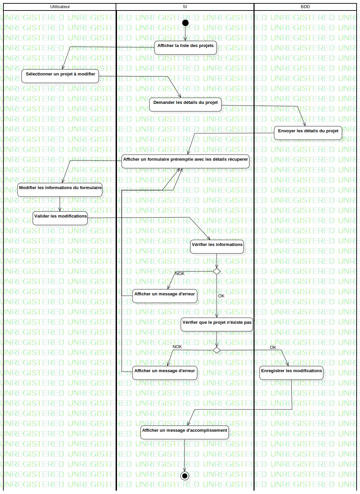

ActD Editer un projet
UMLActivity
Untitled
::
Projet
::
ActD Editer un projet
Description
none
Diagrams

ActD Editer un projet
Groups
Utilisateur
SI
BDD
Edges
(InitialNode1→Afficher la liste des projets)
(Afficher la liste des projets→Sélectionner un projet à modifier)
(Sélectionner un projet à modifier→Demander les détails du projet)
(Demander les détails du projet→Envoyer les détails du projet)
(Envoyer les détails du projet→Afficher un formulaire préremplie avec les détails récuperer)
(Afficher un formulaire préremplie avec les détails récuperer→Modifier les informations du formulaire)
(Modifier les informations du formulaire→Valider les modifications)
(Valider les modifications→Vérifier les informations)
(Vérifier les informations→DecisionNode1)
NOK (DecisionNode1→Afficher un message d'erreur)
OK (DecisionNode1→Vérifier que le projet n'éxiste pas)
OK (DecisionNode1→Afficher un message d'accomplissement)
(Vérifier que le projet n'éxiste pas→DecisionNode1)
NOK (DecisionNode1→Afficher un message d'erreur)
OK (DecisionNode1→Enregistrer les modifications)
(Enregistrer les modifications→Afficher un message d'accomplissement)
(Afficher un message d'accomplissement→ActivityFinalNode1)
(Afficher un message d'erreur→Afficher un formulaire préremplie avec les détails récuperer)
(Afficher un message d'erreur→Afficher un formulaire préremplie avec les détails récuperer)
Properties
Name
Value
name
ActD Editer un projet
stereotype
null
visibility
public
isReentrant
true
isReadOnly
false
isSingleExecution
false
Owned Elements
ActD Editer un projet